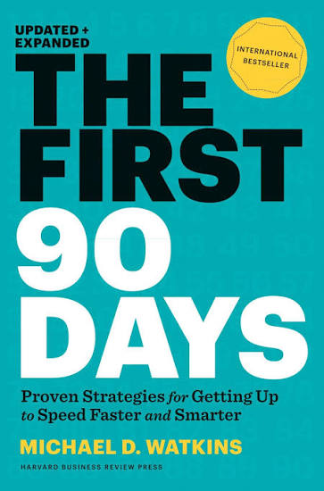

The First 90 Days is the definitive playbook for navigating a career transition — the highest-risk, highest-opportunity period a leader will ever face. Michael Watkins, a leadership transition expert who has coached executives at every level, builds the book around a deceptively simple insight: transitions are dangerous because the "vicious cycle" of bad decisions, lost credibility, and poor relationship-building is much easier to fall into than the "virtuous cycle" of good decisions and increasing trust — and once you're in the vicious cycle, it is extraordinarily hard to climb back out.
This Updated and Expanded edition adds a decade and a half of new material on top of the original 2003 classic: a chapter on onboarding others (Chapter 10, "Expedite Everyone"), the STARS model for diagnosing your situation, deeper coverage of promotions specifically (as opposed to only external hires), and new tools like the Transition Risk Assessment and the Transition Heat Map. The result is less a single argument and more a complete operating system for the first three months in any new role — methodical, sequential, and built for immediate application rather than passive reading.
The book's power comes from its refusal to treat "getting up to speed" as something that just happens with time and good intentions. Watkins breaks the transition into distinct, learnable skills — diagnosing your situation, learning efficiently, negotiating with your new boss, securing early wins, aligning the organization, building your team, creating alliances, and managing your own energy — and gives a specific tool for each one. It reads less like a book of stories and more like a manual you keep on your desk during your first quarter.
The book's central diagnostic: identify which situation (or mix of situations) you've actually inherited before choosing a leadership approach. Most leaders default to whichever approach they personally prefer — usually a costly mismatch.
Assembling people, financing, and technology from scratch
Saving a business or initiative in acknowledged serious trouble
Managing a rapidly expanding business at scale
Reenergizing a once-successful org now facing problems
Preserving vitality and taking a healthy org to the next level
A structured negotiation to run with your new boss — and again with each of your own direct reports.
How does your boss see the STARS portfolio you've inherited?
What are you specifically expected to accomplish, and by when?
What people, budget, and authority do you actually have?
How can you best work together day to day?
What's going well, and what needs to change?
The moment in any transition when your cumulative value produced overtakes your cumulative value consumed. Early on, the organization is investing in you — providing training, tolerance for mistakes, and time to learn — before you're returning that investment. The entire book is organized around reaching this point faster and more safely, without cutting corners that put you in the vicious cycle instead.
Two self-reinforcing loops that determine whether a transition compounds toward success or failure. The virtuous cycle: focused learning → informed strategy and good decisions → increasing credibility → supportive alliances → early wins → more learning. The vicious cycle: inadequate learning → bad decisions → lost credibility → resistance → ineffective relationship-building → even worse decisions. Small early choices about how much to learn before acting determine which cycle takes hold.
A tool for leaders managing multiple people or units in transition simultaneously — new hires, promotions, geographic moves, lateral moves, acquisitions. Plotting transition intensity across your organization reveals where support is most urgently needed, replacing generic, evenly-spread onboarding with targeted intervention where the actual risk is concentrated.
Watkins borrows the classical rhetorical triad to structure influence conversations: logos (data and reasoned argument), ethos (appeals to principle and legitimate policy), and pathos (appeals to values, loyalty, and meaning). Effective coalition-building means diagnosing which mix will move a specific stakeholder — not defaulting to whichever style of persuasion feels most natural to you.
The actions you take during your first few months in a new role will largely determine whether you succeed or fail.
What got you here won't necessarily get you there. The skills, relationships, and habits that made you successful in your previous role may be exactly the wrong ones for this one.
Early wins build your credibility and generate momentum. But early wins built on the wrong foundation are worse than no wins at all — they cost you the trust you'll need for everything that comes after.
You are never the only person in transition. As a leader, part of your job is accelerating everyone else's transitions too.
If the book has one idea worth carrying forward above all others, it's the vicious-versus-virtuous cycle model from the Introduction. It reframes the entire first 90 days not as a list of tasks to complete, but as a single ongoing choice, repeated daily: learn first, or act first? Every other tool in the book — STARS, the Five Conversations, FOGLAMP, the alignment and coalition frameworks — exists to help you make that choice correctly and consistently, under time pressure, when the temptation to skip learning and just start acting is strongest.
What makes this insight durable rather than merely clever is how self-reinforcing both cycles are. A leader who learns first tends to make a good early decision, which builds credibility, which earns the benefit of the doubt on the next decision, which buys more time to learn before the next choice — a compounding advantage. A leader who acts first without adequate learning makes a worse decision, burns credibility, faces more resistance, and — critically — has less standing to ask the questions that would let them learn and correct course. The gap between the two leaders widens every week, which is exactly why the book insists the first weeks matter disproportionately.
Watkins's practical contribution is refusing to leave "learn first" as vague advice. Every subsequent chapter operationalizes it: specific learning methods, specific diagnostic questions, specific conversations to have before acting. That's the throughline that makes an otherwise dense, tool-heavy book cohere into a single argument rather than a grab-bag of separately useful techniques.
The First 90 Days earns its reputation as the standard reference on leadership transitions because it treats the problem with the seriousness it deserves. Watkins doesn't offer inspiration or war stories dressed up as advice — he offers a genuinely comprehensive system, chapter by chapter, tool by tool, for the specific high-stakes period when a leader's habits, relationships, and credibility are all being formed simultaneously and under pressure.
The Updated and Expanded edition earns its update. The STARS model alone justifies picking up this version over the original, and the new Chapter 10 meaningfully extends the book's usefulness beyond personal survival into organizational capability — a natural and valuable expansion for readers who've since become the ones doing the hiring and promoting.
The book's density is real, and no one should expect to execute every tool in every chapter during an actual, chaotic first quarter. The right way to use it is as a reference you return to repeatedly — reading the whole thing once for the map, then re-reading specific chapters (Match Strategy to Situation before you diagnose your new role, Negotiate Success before your first real one-on-one with your new boss, Secure Early Wins once you're past the pure-learning phase) exactly when their tools become relevant.
The honest recommendation: read this before you start a new role, not after you're three months in and things have already gone sideways. If you're past that window, read it anyway — the STARS diagnosis and coalition-building chapters remain valuable at any point in a role — but the compounding advantage of the virtuous cycle is real, and it's easiest to claim from day one.